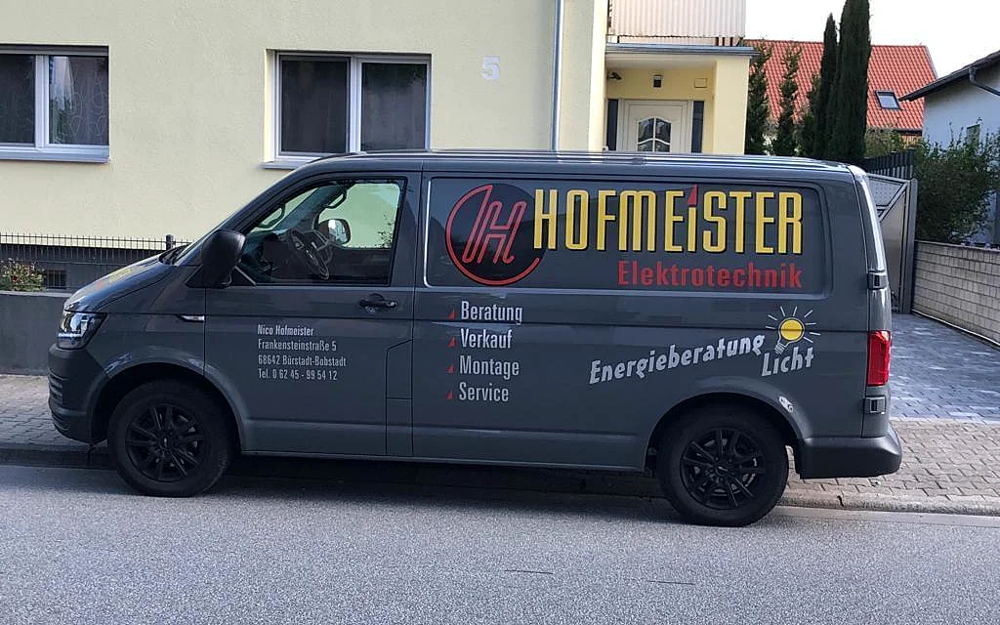

Nico Hofmeister
Elektrotechnikermeister, Jahrgang 1976, geboren in Worms.
Werdegang
- 1993
- Beginn der Ausbildung zum Elektriker in einem kleinen Betrieb in Lampertheim
- 1997
- Ausbildung erfolgreich abgeschlossen
- 2003
- Meisterbrief im Elektrotechniker-Handwerk, Handwerkskammer Rhein-Main in Darmstadt
- 2004
- Selbstständig als Elektrotechnikermeister
Mein Schwerpunkt ist die Gebäudeinstallation, ob klein oder groß: von der Renovierung einer Wohnung bis zur kompletten Anlage mit Zählerplatz, Verteilung, Licht, Sat-, Sprech- und Netzwerktechnik.
Ich verbaue überwiegend Produkte namhafter Hersteller, die ich über den Elektrogroßhandel beziehe. So weiß ich, was in Ihrer Wand steckt, und bekomme auch Jahre später noch Ersatz.
Zu meinen Kunden gehören private Haushalte, Hausverwaltungen, Vereine, Gewerbe- und Industriebetriebe und öffentliche Träger. Termine vereinbare ich nach telefonischer Absprache, dann weiß ich vorher, worum es geht, und habe das passende Material dabei.
